In many programming languages, we will find a strange phenomenon: when calculating 0.1 + 0.2, the result is not 0.3. For example, C, C++, JavaScript, Python, Java, Ruby, etc., all have this problem.
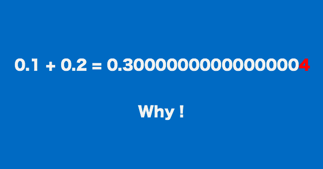
For this reason, someone even made ahttps://0.30000000000000004.com/website. On this website, we can find which programming languages produce a result of not 0.3 but 0.30000000000000004 when calculating 0.1 + 0.2.
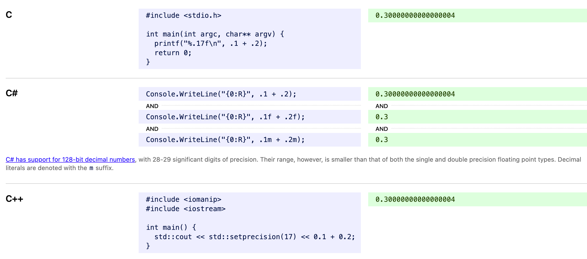
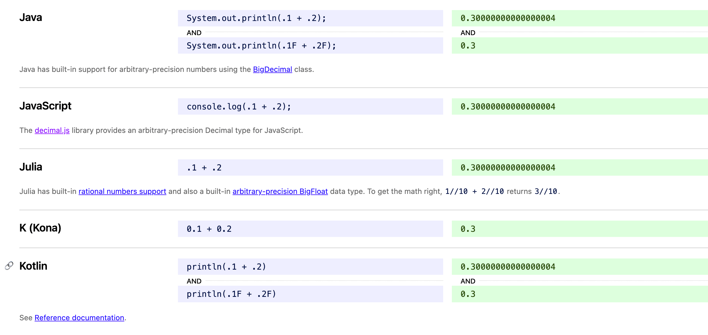
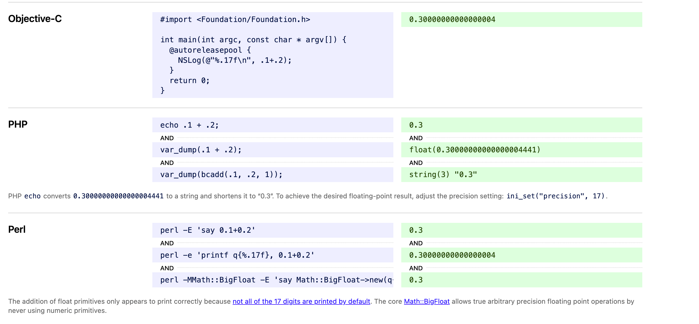
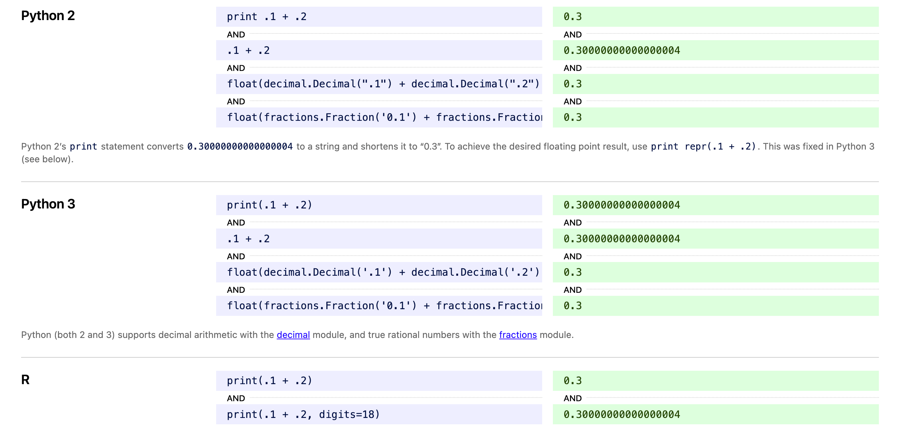
We can use JavaScript for demonstration. Calculating 0.1 + 0.2 gives a result not of 0.3, but 0.30000000000000004.
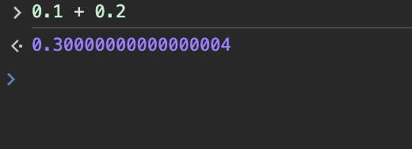
Of course, if you use it as a conditional statement, it also returns false:
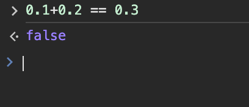
There are other examples:
6 * 0.1 = 0.6 但计算机显示为 0.6000000000000001 0.11 + 0.12 = 0.23 但计算机显示为 0.22999999999999998 0.1 + 0.7 = 0.8 但计算机显示为 0.7999999999999999 0.3+0.6 = 0.9 但计算机显示为0.8999999999999999
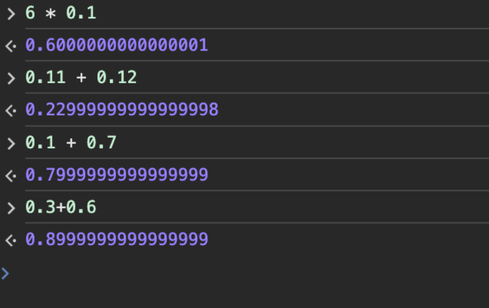
However, the following expressions can yield the desired result:
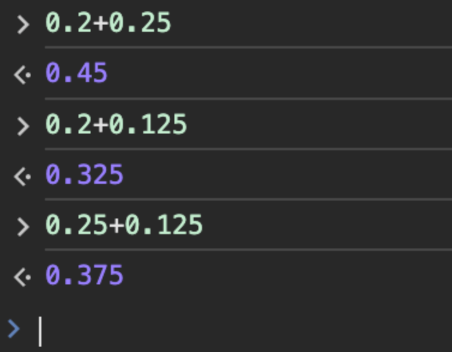
Why is this?
Simply put, computers use binary-based floating-point numbers, while we humans use decimal-based floating-point numbers.
In binary, floating-point numbers are usually represented using the IEEE 754 standard. Decimals such as 0.1, 0.2, or 0.3 cannot be accurately represented because it uses a binary floating-point format.
For the IEEE 754 standard, see:https://zh.wikipedia.org/wiki/IEEE_754
Underlying Principle
In the decimal system, a fraction can be represented exactly if its denominator uses the prime factors of the base (10).
The prime factors of 10 are 2 and 5.
Therefore, 1/2, 1/4, 1/5 (0.2), 1/8, and 1/10 (0.1) can be represented exactly because their denominators use the prime factors of 10.
However, 1/3, 1/6, and 1/7 are infinite recurring decimals because their denominators use the prime factors 3 or 7.
In binary (the system used by computers), a fraction can be represented exactly if it uses the prime factors of the base (2).
2 is the only prime factor of 2.
Therefore, 1/2, 1/4, and 1/8 can all be represented exactly because their denominators use the prime factors of 2.
However, 1/5 (0.2) or 1/10 (0.1) are infinite recurring decimals because their denominators use the prime factors of 5 or 10.
So when we try to represent a decimal fraction like 0.1, the computer uses an approximation. This approximation is realized by converting the infinitely recurring binary fraction into a floating-point representation with a finite number of bits.
Therefore, when we perform floating-point arithmetic in a computer, the result may have a tiny error.
For example, the approximate representation of 0.1 in binary may be 0.000110011001100..., but in a computer's floating-point representation, it may be truncated or rounded to 0.00011001100110. This leads to 0.1 + 0.2 not necessarily equaling 0.3 in a computer, but deviating slightly.
0.1 is one-tenth (1/10). To obtain the binary representation of 0.1 (i.e., its binary form), we need to use binary long division, that is, divide the binary number 1 by binary 1010 (i.e., 1/1010), as follows:
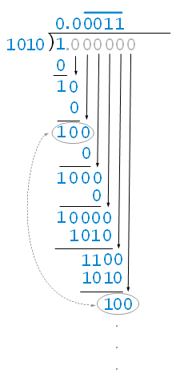
Therefore, 0.1 is represented in binary as 0.0001100110011001100110011... (infinitely repeating).
This infinitely repeating pattern 0011 will continue forever, because the binary system can only approximate 0.1 in decimal in this way.
In an actual computer system, this infinitely repeating decimal is truncated to a finite number of bits for storage and computation. This leads to possible precision loss when performing binary floating-point arithmetic in a computer, making the sum of 0.1 and 0.2 not exactly equal to 0.3.
Converting Decimal Fractions to Binary
There is also an easier-to-understand method (the multiply by 2 and take the integer part method). For example, to convert the decimal fraction 0.875 to a binary number, you simply multiply the fractional part by 2, then extract the integer part, until the fractional part becomes 0.
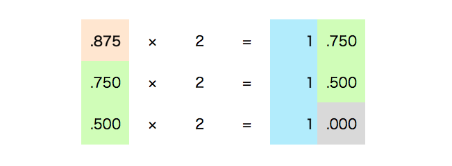
Arrange the integer parts extracted above to get the result 111, which becomes the binary representation..875。
The binary number 1101.111, with integer part 1101 and fractional part 111, is the result of converting the decimal number 13.875 to binary.
Using the above method, converting the decimal fraction 0.1 to binary gives:
0.1 = 0.0001100110011001100110011001100110011001100110011001101...
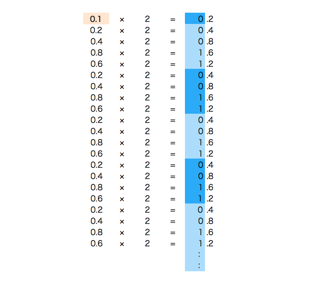
Converting the decimal fraction 0.2 to binary gives:
0.2 = 0.001100110011001100110011001100110011001100110011001101...
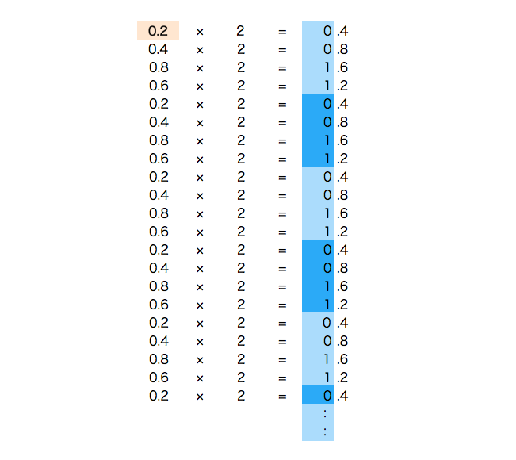
Solutions
1. Convert the decimal to an integer first
You can first convert the decimals to integers, add them, then convert back to decimals, as in the following example:
(0.1*10 + 0.2*10)/10
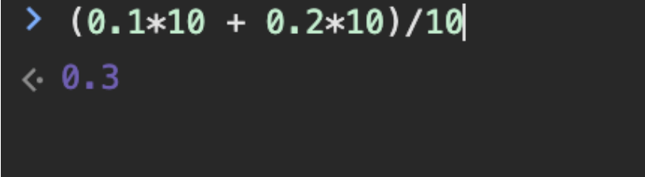
2. Use the toFixed() method
The toFixed() method can convert a number into a string representation with a specified number of decimal places.
Below is an example of using the toFixed() method to solve floating-point precision issues:
let sum = 0.1 + 0.2; console.log(sum.toFixed(2)); // 输出: 0.30
It should be noted that although the toFixed() method solves the problem in terms of display, it does not change the actual value of the number; it only changes its representation.
If you need to perform precise mathematical operations, you may need to use other methods, such as introducing a numeric type with higher precision or using a third-party math library to handle floating-point arithmetic.
3. Use the decimal.js library
When dealing with floating-point precision issues in JavaScript, using the decimal.js library is a more precise and reliable solution.
decimal.js is an arbitrary-precision decimal math library that can avoid the inaccuracies of floating-point operations in native JavaScript.
GitHub address:https://github.com/MikeMcl/decimal.js
First, you need to import the decimal.js library into your project.Install using npm:
npm install decimal.js
Import in HTML:
<script src="../cdnjs.cloudflare.com/ajax/libs/decimal.js/10.2.0/decimal.min.js"></script>
Next, you can use decimal.js to handle floating-point operations. Here is an example:
Example
const Decimal = decimal. Decimal;
// Create two Decimal objects
let a = new Decimal('0.1');
let b = new Decimal('0.2');
// Perform addition
let sum = a.plus(b);
// Output the result
console.log(sum.toString()); // Output: 0.3
The result obtained using the decimal.js library is exactly 0.3, rather than the approximate value from native JavaScript.
FourthSon Hunag
201***07hengyang@sina.com
When dealing with floating-point precision issues in JavaScript, using the decimal.js library is a more precise and reliable solution.
decimal.js is an arbitrary-precision decimal math library that can avoid the inaccuracies of floating-point operations in native JavaScript.
decimal.js open source address:https://github.com/MikeMcl/decimal.js
FourthSon Hunag
201***07hengyang@sina.com